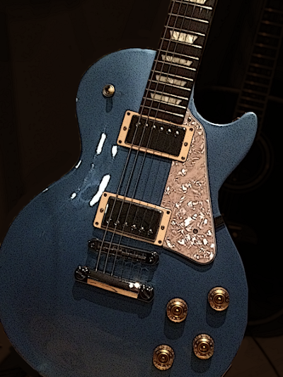

A Tribute to The Guitar

A Les Paul Studio in Pelham Blue - 2016 edition.
Las Seis Cuerdas
La guitarra,
hace llorar a los sueños.
El sollozo de las almas
perdidas,
se escapa por su boca
redonda.
Y como la tarántula
teje una gran estrella
para cazar suspiros,
que flotan en su negro
aljibe de madera.
- Frederico García Lorca
The piano is a monster that screams when you touch its teeth.
- Andrés Segovia
Learn more about the guitar.